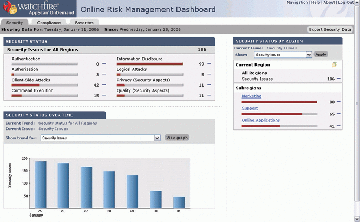
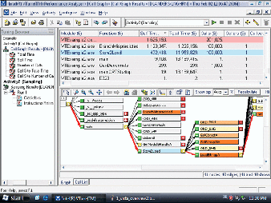

Dr. Dobb's Journal July 2006
No software job is finished until the security work is done. For Web apps, that means torture-testing the deployed code, looking for everything from broken links to SQL injection vulnerabilities. Frequently, such testing involves installing and configuring software that's practically as complex as developing the application itself. Having reviewed Watchfire's AppScan, I can attest that it delivers useful results, but the process is a lot more involved than slapping in a CD and letting it auto-run.
Now, Watchfire is offering AppScan as a hosted service, taking the installation, update, and initial configuration headaches right out of the picture. In fact, the service comes with a Watchfire security analyst to set up the scans, analyze the results, and produce comprehensible reports. For organizations that don't want or need to devote staff and computing resources to web site security testing, this model could be a boon—just off-loading the update burden can be significant, and since new threats arise daily, you can hardly afford to fall behind.
Because needs vary widely, pricing is a little more individualized than for a shrink-wrap package; contact Watchfire for pricing.
Watchfire, 880 Winter Street, Waltham, MA 02451, Tel: (781) 810-1450, Fax: (781) 890-2087, www.watchfire.com
We developers tend to be a bit starry-eyed about the Internet. Admit it, if you had your druthers you'd be writing for RSS or web services or quantum-encrypted telepathy. But the hard fact of the matter is that e-mail still rules.
Microsoft included e-mail facilities in .NET. However, if you really want to make e-mail sit up and sing, you're going to want more. Afterlogic's MailBee.NET Objects may not include quantum telepathy, but it's got just about everything else you could think of to craft e-mail-enabled applications without having to reinvent sendmail.
First off, true to the spirit of .NET, you're not language-limited. If you crave an eyeful of Eiffel and want your apps to send e-mail, MailBee can do that. It also supports .NET 1.1 and 2.0. Protocols supported include POP3, SMTP, ESMTP (automatically detected and used if available), MIME, XML, HTML, and MHTML.
Heading outbound, SMTP support handles things like multiple servers and relay servers (spammers, please stop reading here), as well as the ability to send a message with a single line of code. Coming in, MailBee's POP3 support handles a variety of authentication methods and can detect and use POP3 extensions automatically. MailBee gives you a MailMessage object for both sending and receiving mail. MailBee .NET Objects 1.0 is priced at $99 for a single-developer, royalty-free license.
AfterLogic Corp., 117 W. Mt. Pleasant Ave., PMB120, Livingston, NJ 07039. Tel: (303) 364-3899, www.afterlogic.com
"Premature optimization," said Hoare and Knuth, "is the root of all evil." But a lack of optimization can be a route to unemployment—if the app dogs, developers get flogged. No one familiar with the careers of Hoare and Knuth, or their published works, would interpret that epigram as advice to ignore performance, but too many lazy architects have done just that over the years. Granted, there's no royal road to the most efficient design. But tools for identifying performance bottlenecks are now sufficiently powerful that optimization can be a fun intellectual hunt, rather than a frustrating slog.
Case in point: Intel's VTune suite. It's not exactly "new," of course; the company has just come out with Version 8.0. But what's most "noteworthy" is that Intel has added support for Intel Core Duo and dual-core Itanium ("Montecito") processors. (Of course, it still works on your garden-variety Core Solo and previous Intel chips; AMD-heads, however, need not apply.) For 8.0, Intel also added events for measuring parallelism as well as bus and cache sharing, so that you can track how the cores are doing and determine if they're playing nice with each other. The product also includes a Thread Profiler that can identify the "critical paths" as they hop between threads and monitor blocking and switching. With this level of tool support, multicore and multithread optimization goes from terrifying to tractable.
That's not all, of course, but it's the biggie. VTune 8.0 for Windows fully supports both 32- and 64-bit Windows (including Vista and Longhorn Server), integrates with Visual Studio 2005, and offers profiling for .NET 2.0. The Linux version supports 2.6 kernels, read-only filesystems, multiple users, and up to 4096 (!) processors. VTune 8.0 for Linux and for Windows are both priced at $699.
Intel, 2200 Mission College Blvd., Santa Clara, CA 95052, Tel: (408) 765-8080, www.intel.com